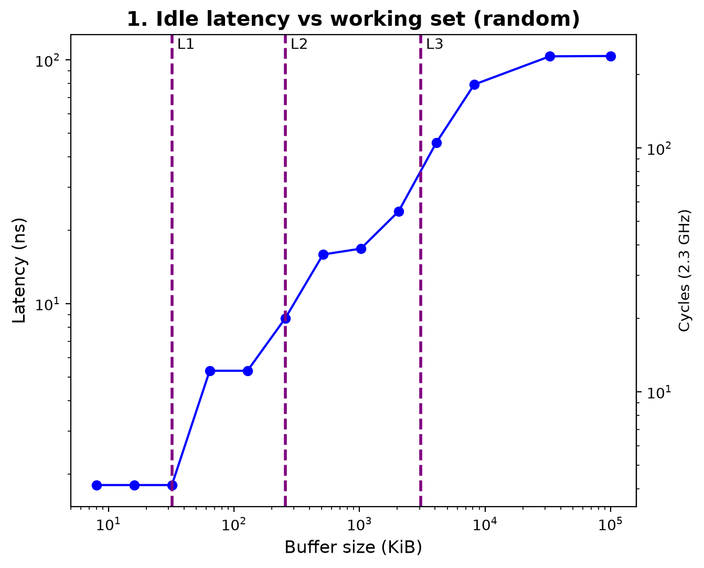
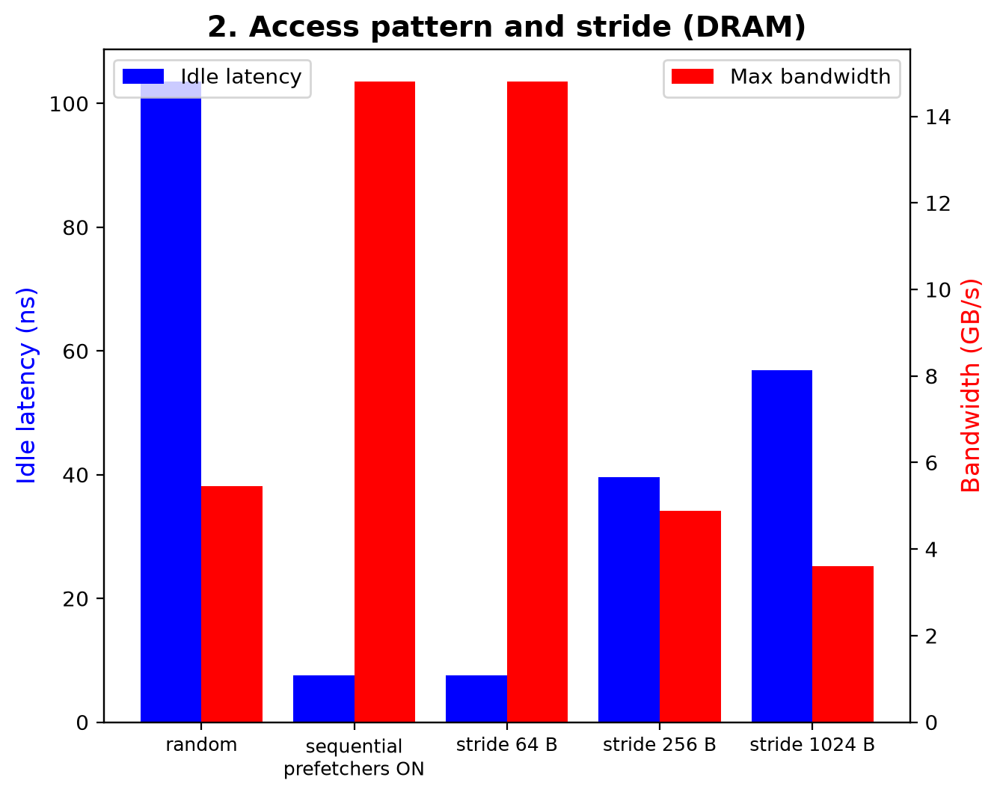
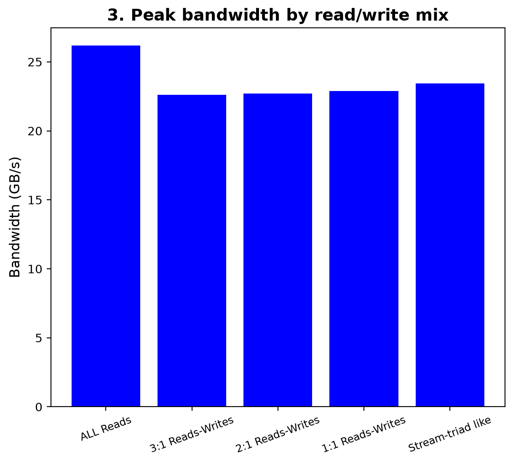
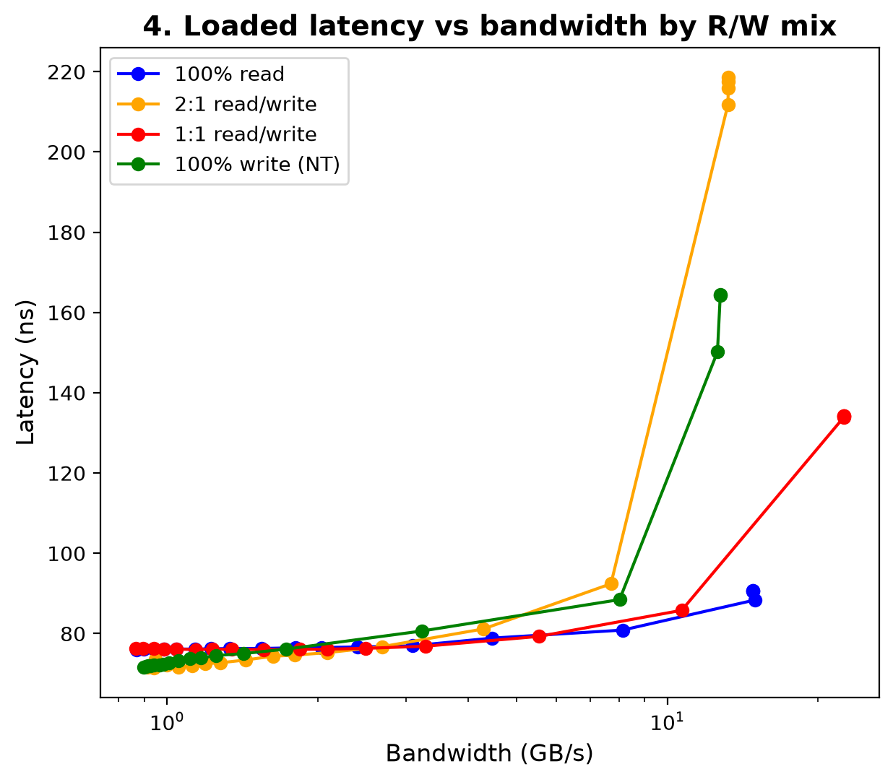
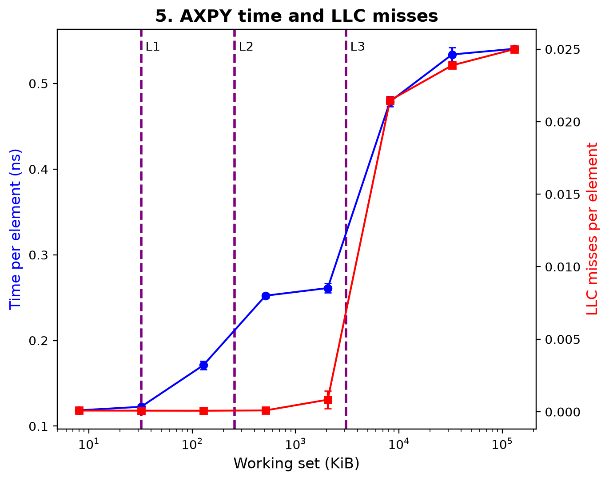
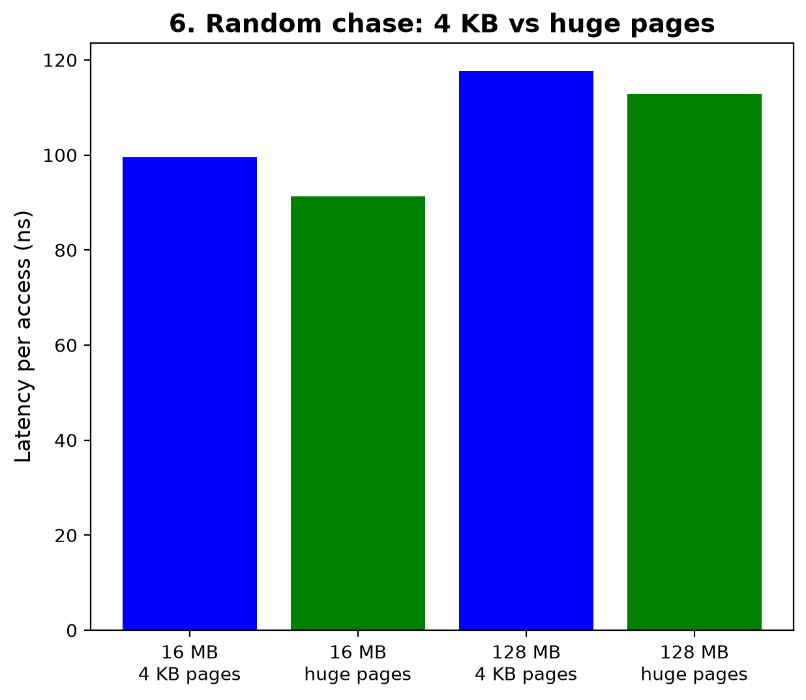

Project 2: Cache & Memory Performance Profiling
ECSE 4320/6320 Advanced Computer Systems · Intel Core i3-6100U · Intel MLC v3.13 + perf
1. Setup and methodology
25 pts · Experimental rigor| CPU | Intel Core i3-6100U @ 2.3 GHz, 2 cores / 4 threads, 1 socket, 1 NUMA node |
|---|---|
| Caches | L1d 32 KiB and L2 256 KiB per core; L3 3 MiB shared |
| Memory / OS | 10 GiB; Ubuntu, Linux 6.11.0-29-generic; gcc 14.2.0 |
| Tools | Intel MLC v3.13; perf; own kernels in simd.c (AXPY, random pointer chase) |
| Frequency / SMT / pages | Governor powersave (no turbo on this CPU); SMT on; THP default madvise |
| Pinning | Own kernels pinned to core 2 (taskset); MLC places its own threads |
| Repetitions | perf runs: 3 reps (mean ± std); MLC averages internally, 1 run per setting |
| Sanity check | My own random pointer chase (16 MB, 4 KB pages) takes 99.5 ns per access, close to MLC's DRAM latency of 103.6 ns |
| Prefetchers | MLC couldn't disable them (kernel lockdown), so latency tests use random access (-r) |
2. Hypothesis
- Latency will increase as the working set grows past each cache level, because by the memory hierarchy, bigger memory is slower
- DRAM bandwidth should be similar across access patterns, because there are no cache misses to worry about once everything comes from DRAM, and DRAM is made for random access
- Throughput and latency will get worse with more accesses, because the memory can only deliver so much (a speed limit)
- I wasn't sure what to expect for the read/write mixes or for huge pages
3. Zero-queue latency and working-set sweep
25 pts · Zero-queue baselines
| Level | Buffer used | Latency (ns) | Cycles |
|---|---|---|---|
| L1 | 8–32 KiB | 1.8 | 4.0 |
| L2 | 64–128 KiB | 5.3 | 12.1 |
| L3 | 1 MiB | 16.8 | 38.7 |
| DRAM | 32–100 MiB | 103.6 | 238.8 |
The buffer sizes go from 8 KiB to about 100 MiB, and they show well how the latency changes across scales. Points right at a cache boundary are a mix of two levels, so for the table I used sizes well inside each level.
4. Pattern and granularity sweep
35 pts · Pattern, granularity and read/write sweeps
- Sequential: 7.6 ns, 14.8 GB/s · Random: 103.6 ns, 5.5 GB/s
- Stride 256 B → 1024 B: latency 39.6 → 56.9 ns; bandwidth 4.9 → 3.6 GB/s
My hypothesis was wrong: different access patterns are slower or faster because of the prefetcher, which can help in simple patterns like sequential access. Random access gets no help from it, so it is the slowest.
5. Read/write mix
35 pts · Pattern, granularity and read/write sweeps
- Peak bandwidth: 100% read 26.2 GB/s; every mix with writes 22.6–22.9 GB/s
- Latency at max load: 100% read 90.7 ns · 1:1 134.2 ns · 100% write 164.3 ns · 2:1 218.6 ns
- 2:1 (67/33) is MLC's closest mix to 70/30; 100% write uses non-temporal stores (
-W6)
The bandwidth looks about the same for all the mixes except all reads, which is higher. All reads also has the lowest latency, so writes may be more costly than reads.
6. Intensity sweep: throughput–latency knee
35 pts · Throughput–latency knee
- 100% read: latency flat at ~76 ns up to ~3 GB/s; knee between 8.1 GB/s (80.9 ns) and 15.0 GB/s (88.4 ns)
- Little's Law at max load: 14.8 GB/s × 90.7 ns ÷ 64 B ≈ 21 cache lines in flight
Latency stays flat at first, then goes up at the knee while the bandwidth stops growing. By Little's Law, about 21 cache lines are in flight at the maximum. The bandwidth probably stops growing because the cores cannot keep more misses in flight than that.
7. Cache-miss impact
35 pts · Working-set, cache and TLB analysis
- Time steps: L1 → L2 0.12 → 0.17 ns/element; L3 → DRAM 0.26 → 0.48 ns/element
- LLC misses jump ~27× (0.0008 → 0.0215 per element) at the DRAM step
The more misses, the more time per element, specifically past L3, which makes sense since that's when there are cache misses to DRAM. Each miss costs a DRAM access (~100 ns) instead of an L3 hit (~17 ns).
8. TLB-miss impact
35 pts · Working-set, cache and TLB analysis
never) vs huge pages (THP always).| Buffer | Pages | ns/access | dTLB-load-misses | LLC-load-misses |
|---|---|---|---|---|
| 16 MB | 4 KB | 99.5 ± 2.7 | 3.5 × 10⁷ | 4.8 × 10⁷ |
| 16 MB | huge | 91.3 ± 0.1 | 8.9 × 10³ | 4.8 × 10⁷ |
| 128 MB | 4 KB | 117.7 ± 0.3 | 1.2 × 10⁸ | 1.3 × 10⁸ |
| 128 MB | huge | 112.8 ± 1.5 | 1.9 × 10⁴ | 1.3 × 10⁸ |
Huge pages remove almost all TLB misses, but the time only drops 4–8%, since every access in the chase still has to go to DRAM.
9. Benchmark pitfall: prefetching
15 pts · AI-use transparency and pitfall analysis- Same 100 MiB buffer (Figure 2, first two bars): sequential "latency" 7.6 ns vs random 103.6 ns
With sequential access, the prefetcher brings the data in early, so the test measures cache hits instead of DRAM and looks about 14× faster than it really is. That's why the latency tests use random access (-r).
10. Limitations
- 2-core laptop: few threads to generate load, so the knee is shallow
- Prefetchers couldn't be disabled
- MLC run once per setting;
perfcounts include setup code
11. AI-use note
15 pts · AI-use transparencyAI use for all three projects is described in one shared note: AI_USE_NOTES.md at the top of the repository.